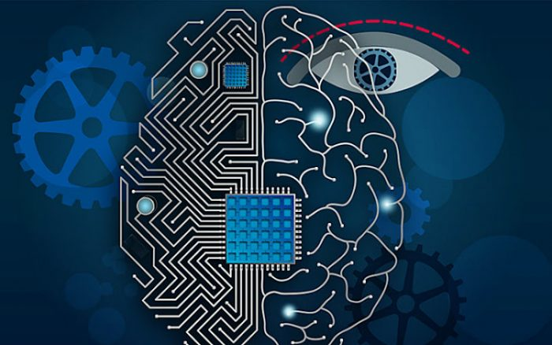

AI
Autor:Luis Armando Garcia Perez
definicion:
En términos sencillos, inteligencia artificial (IA) se refiere a los sistemas o las máquinas que imitan la inteligencia humana para realizar tareas y que tienen la capacidad de mejorar iterativamente a partir de la información que recopilan. La IA se manifiesta de varias formas. Algunos ejemplos son: Los bots conversacionales que utilizan IA para comprender más rápido los problemas de los clientes y proporcionar respuestas más eficientes Los asistentes inteligentes utilizan la IA para analizar información crítica proveniente de grandes conjuntos de datos de texto libre para mejorar la programación Los motores de recomendación pueden proporcionar recomendaciones automatizadas para programas de TV según los hábitos de visualización de los usuarios La IA se trata mucho más sobre el proceso y la capacidad de pensamiento superpoderado y el análisis de datos que sobre cualquier formato o función en particular. Aunque la IA muestra imágenes de robots de aspecto humano de alto funcionamiento que se apoderan del mundo, la IA no pretende reemplazar a los humanos. Su objetivo es mejorar significativamente las capacidades y contribuciones humanas. Eso la convierte en un activo comercial muy valioso.
Tipos de IA
Compras por internet y publicidad
La inteligencia artificial se usa mucho para crear recomendaciones personalizadas para los consumidores, basadas, por ejemplo, en sus búsquedas y compras previas o en otros comportamientos en línea. La IA es muy importante en el comercio, para optimizar los producos, planear el inventario, procesos logísticos, etc.
Búsquedas en la web
Los motores de búsqueda aprenden de la gran cantidad de datos que proporcionan sus usuarios para ofrecer resultados de búsqueda relevantes.
Asistentes personales digitales
Los teléfonos móviles smartphones usan la IA para un producto lo más relevante y personalizado posible. El uso de los asistentes virtuales que responden a preguntan, dan recomendaciones y ayudan a organizar las rutinas de sus propietarios se ha generalizado.
Traducciones automática
El software de traducción de idiomas, ya sea basado en texto escrito o hablado, se basa en la inteligencia artificial para proporcionar y mejorar las traducciones. Esto también se aplica a funciones como la subtitulación automática.
Casas, ciudades e infraestructuras inteligentes
Los termostatos inteligentes aprenden de nuestro comportamiento para ahorrar energía, mientras que los desarrolladores de ciudades inteligentes esperan poder regular el tráfico para mejorar la conectividad y reducir los atascos.
Vehículos
Aunque los vehículos de conducción autónoma no están generalizados todavía, los coches utilizan ya funciones de seguridad impulsadas por IA. Por ejemplo, la UE ayudó en la financiación del sistema de asistencia a la conducción basado en visión VI-DAS, que detecta posibles situaciones peligrosas y accidentes.
Ciberseguridad
Los sistemas de inteligencia artificial pueden ayudar a reconocer y luchar contra los ciberataques y otras amenazas en línea basándose en los datos que reciben continuamente, reconociendo patrones e impidiendo los ataques.
La inteligencia artficial para luchar contra la Covid-19
La IA se ha utilizado en las cámaras termográficas instaladas en los aeropuertos y en otros lugares. En medicina, puede ayudar a reconocer una infección de los pulmones a partir de una prueba llamada tomografía computarizada. También se ha utilizado para proporcionar datos para rastrear la propagación de la enfermedad.
Lucha contra la desinformación
Algunas aplicaciones de la inteligencia artificial pueden detectar noticias falsas y desinformación al extraer información de las redes sociales, buscar palabras sensacionales o alarmantes e idefintificar qué fuentes en línea se consideran autorizadas.